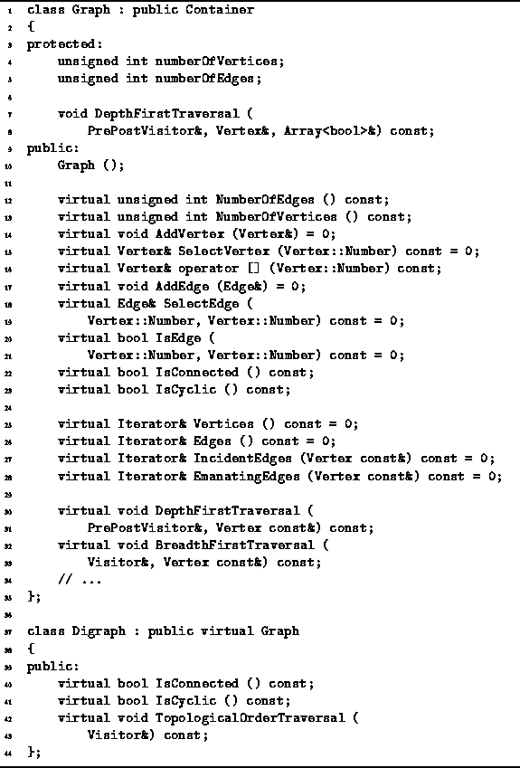

Data Structures and Algorithms
with Object-Oriented Design Patterns in C++
Data Structures and Algorithms
with Object-Oriented Design Patterns in C++Directed graphs and undirected graphs have many common characteristics. Therefore, it seems reasonable to make use of inheritance in the implementation of graph classes. However, there are several possible ways in which to organize the class hierarchy:
As shown in Figure  ,
we have chosen to use option C.
We have chosen this approach because many algorithms
for undirected graphs can also be used with directed graphs.
On the other hand, it is often the case that algorithms
for directed graphs cannot be used with undirected graphs.
,
we have chosen to use option C.
We have chosen this approach because many algorithms
for undirected graphs can also be used with directed graphs.
On the other hand, it is often the case that algorithms
for directed graphs cannot be used with undirected graphs.
Program declares two abstract classes,
Graph and Digraph.
The Graph class is the base class
from which concrete classes that represent undirected graphs are derived.
The Digraph abstract class extends the Graph class.
The Digraph class is the base class
from which concrete classes that represent directed graphs are derived.

Program: Graph and Digraph Class Definitions
The Graph class is an abstract base class since it contains pure virtual member functions. The graph class adds two member variables to those inherited from the base classes--numberOfEdges and numberOfVertices. A default constructor for the Graph class is also declared. The effect of this constructor is to initialize both member variables with the value zero. Therefore, a graph is initially empty--it contains neither vertices nor edges.
A number of Graph class member
functions are declared in Program .
There are essentially three groups of member functions:
accessors and mutators, iterators, and traversals.
The operations performed by the member functions
are explained in the following sections.
 Copyright © 1997 by Bruno R. Preiss, P.Eng. All rights reserved.
Copyright © 1997 by Bruno R. Preiss, P.Eng. All rights reserved.